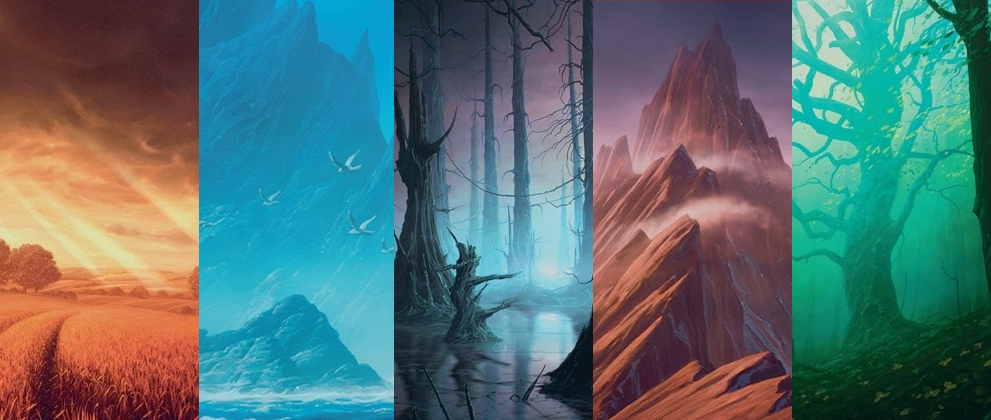
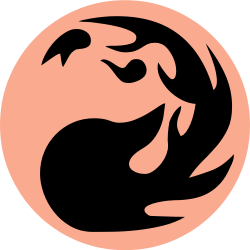

Magic: The Gathering (conhecido coloquialmente como Magic ou MTG) é um jogo de cartas colecionáveis, tanto de mesa quanto digital, criado por Richard Garfield. Foi lançado pela Wizards of the Coast em 1993 como o primeiro jogo de cartas colecionáveis da empresa. Em fevereiro de 2023, Magic já contava com aproximadamente cinquenta milhões de jogadores em todo o mundo. De 2008 a 2016, mais de vinte bilhões de cartas de Magic foram impressas, acompanhando o crescimento da popularidade do jogo.
A cor branca valoriza o grupo, a comunidade e sua civilização como um todo. Ela acredita que o sofrimento é um subproduto da negligência individual em relação ao bem coletivo. O objetivo final da cor branca é a paz — um mundo sem sofrimento desnecessário; um mundo onde a vida seja a melhor possível para cada indivíduo; um mundo onde todos se dão bem e ninguém busca perturbar os laços de união que a cor branca trabalhou tanto para forjar. Para governar e proteger sua comunidade, a cor branca utiliza e valoriza diversos conceitos amplos: moralidade (ética, graça, verdade), ordem (lei, disciplina, dever), uniformidade (conformidade, religião) e estrutura (governo, planejamento, razão). Mais do que qualquer outra cor, a cor branca acredita que existe um bem e um mal claros no mundo e que não é difícil distingui-los.
O azul representa intelecto, lógica, manipulação e astúcia, e extrai sua mana de ilhas. Sua magia é tipicamente associada aos elementos clássicos do ar e da água. Muitas das mágicas azuis podem interagir ou interferir nas mágicas do oponente, bem como no fluxo geral do jogo. A magia azul também está associada ao controle, permitindo ao jogador obter controle temporário ou total das criaturas do oponente. Criaturas azuis tendem a ser fracas, porém evasivas e difíceis de alvejar.
O preto representa poder, morte, corrupção e sacrifício, extraindo mana de pântanos. Muitas das criaturas pretas são mortas-vivas, e várias podem ser sacrificadas para tornar outras criaturas mais poderosas, destruir criaturas ou permanentes do oponente, ou por outros efeitos. Criaturas pretas podem recuperar a vida perdida em um ataque para seu conjurador, ou até mesmo matar criaturas através de um efeito de toque mortal. As mágicas pretas também forçam o sacrifício do jogador ou de seu oponente através de cartas ou vida.

O vermelho representa liberdade, caos, fúria e guerra, extraindo seu poder das montanhas. Seus poderes estão associados aos elementos clássicos fogo e terra, e tende a possuir as magias mais poderosas, como bolas de fogo, que podem ser potencializadas ao gastar mana adicional no momento da conjuração. O vermelho é uma classe voltada para o ataque: além de criaturas poderosas como dragões, os planeswalkers vermelhos podem invocar criaturas mais fracas que atacam rapidamente para obter vantagem a curto prazo.
O verde é a cor da vida, da natureza, da evolução e da indulgência, extraindo mana das florestas. O verde possui a mais ampla variedade de criaturas para utilizar, abrangendo todos os níveis de poder, e geralmente é capaz de dominar o campo de batalha com muitas criaturas em jogo simultaneamente. Criaturas e mágicas verdes podem gerar pontos de vida e mana, e também podem ganhar força massiva através de mágicas.